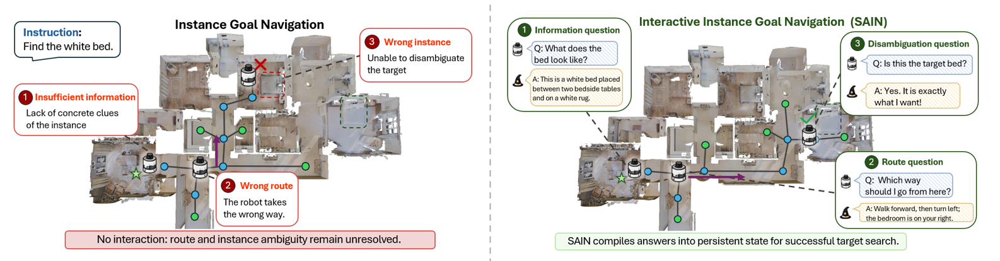
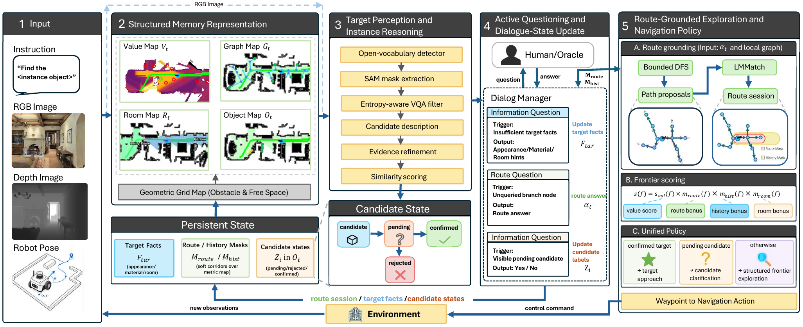

Real-World Challenge
Users rarely provide perfectly grounded navigation commands. Robots must handle missing attributes, ambiguous instances, and changing evidence gathered during exploration.
Interactive Instance Goal Navigation
1Networked Robotics and Systems Lab, Harbin Institute of Technology, Shenzhen
Most existing vision-language navigation tasks assume that instructions are complete and unambiguous. However, real-world robots often encounter natural human instructions that are ambiguous, underspecified, or incomplete, requiring them to resolve such uncertainties through active questioning. Interactive Instance Goal Navigation (IIGN) requires an embodied agent to find the specific instance under an ambiguous category-level instruction through active dialogue.
However, existing dialog-enabled methods often consume oracle answers as transient textual context for immediate decisions, rather than persistent spatial or object-centric structured state. We present SAIN, a zero-shot framework that turns active dialogue into persistent navigation state. Instead of consuming oracle answers as one-step text hints, SAIN compiles them into target evidence, route-level corridor memory, and object-candidate labels.
These states are stored in structured value, room, graph, and object memories, then consumed by a unified policy for frontier ranking and final target approach. On the VL-LN IIGN benchmark, SAIN improves SR from 20.2 to 25.4 and SPL from 13.07 to 14.17 over the strongest reported dialog-enabled baseline, while requiring no task-specific policy training. The results support dialogue-to-state conversion as an effective zero-shot mechanism for long-horizon interactive instance navigation.

Users rarely provide perfectly grounded navigation commands. Robots must handle missing attributes, ambiguous instances, and changing evidence gathered during exploration.
Prior navigation systems often consume dialogue as transient language, which limits their ability to preserve spatial, object, and route-level evidence across long-horizon decisions.
SAIN makes dialogue actionable by storing grounded evidence in structured memories that can be queried throughout exploration, re-observation, and target confirmation.

| Method | SR ↑ | SPL ↑ | OS ↑ | NE ↓ | Avg Steps ↓ | Avg Q. ↓ | MSP ↑ |
|---|---|---|---|---|---|---|---|
| FBE | 8.4 | 4.74 | 25.2 | 11.84 | - | - | - |
| VLFM | 10.2 | 6.42 | 32.4 | 11.17 | - | - | - |
| VLLN-I | 14.2 | 8.18 | 47.8 | 9.54 | - | - | - |
| VLLN-D0 | 15.4 | 9.86 | 55.2 | 9.17 | - | 0.00 | 0.00 |
| VLLN-D | 20.2 | 13.07 | 56.8 | 8.84 | - | 1.76 | 2.73 |
| SAIN-D0 | 11.6 | 1.56 | 56.0 | 10.65 | 468.2 | 0.00 | 0.00 |
| SAIN-D1 | 20.6 | 10.43 | 44.2 | 9.63 | 248.4 | 1.00 | 9.00 |
| SAIN-D | 25.4 | 14.17 | 46.0 | 8.06 | 217.6 | 4.58 | 3.02 |